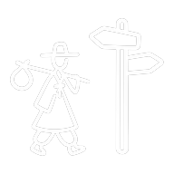

우리는 오로라를 보기 위해 떠납니다.사전 속 정의나 사진으로 보던 그 오로라를 향해.
하지만 오로라를 진짜 목격하는 건,그 시간 그 장소에 우연히 함께 서 있는 순간입니다.
같은 장소 다른 시간,다른 장소 같은 시간.당신의 오로라는 어떤 모양인가요?
당신의 발걸음이 단 하나뿐인 'The' aurora가 되길 바라며,- 두발로 -
우리가 만드는 모든 경험은 이 가치에서 출발합니다.
그 중심에는 '우연성'이 있습니다.
현지에 깊이 빠져드는 경험. 기계적인 관광이 아니라, 그 장소를 몸으로 감각하는 진짜 경험을 지향합니다.
계획되지 않은 만남의 즐거움. 목적지를 숨기고 나침반으로만 안내해, 여행에 다시 우연을 불어넣습니다.
자신만의 길을 만들어가는 용기. 정해진 답을 거부하고, 아직 알려지지 않은 로컬의 장소로 발걸음을 이끕니다.
경험을 통한 자기 형성. 여행이 나를 만들고, 그 발걸음이 쌓여 자기효능감이 됩니다.
계획되지 않은 만남의 즐거움. 목적지를 숨기고 나침반으로만 안내해, 여행에 다시 우연을 불어넣습니다.
현지에 깊이 빠져드는 경험. 기계적인 관광이 아니라, 그 장소를 몸으로 감각하는 진짜 경험을 지향합니다.
자신만의 길을 만들어가는 용기. 정해진 답을 거부하고, 아직 알려지지 않은 로컬의 장소로 발걸음을 이끕니다.
경험을 통한 자기 형성. 여행이 나를 만들고, 그 발걸음이 쌓여 자기효능감이 됩니다.
지도를 펼쳐보는 여행이 아니라, 나침반 하나로 다가가는 여행. 발길 솔리아의 첫 브랜드 dobalro가 제안하는 근접 공개(Proximity Reveal) 방식입니다.
목적지 이름도 사진도 미리 보여주지 않습니다. 나침반이 가리키는 방향과 남은 거리가 전부입니다.
지도 앱 대신 감각과 발걸음으로 좁혀갑니다. 걷는 동안 도시는 계획이 아닌 우연으로 채워집니다.
목적지 5m 이내에 들어서면 화면이 열리며 장소가 모습을 드러냅니다. 도착이 곧 발견이 됩니다.
App Store·Play Store 심사 없이,
브라우저에서 바로 홈 화면에 설치되는 웹 앱입니다.
열두 개의 질문으로 현지 적응도와 개척·혁신성 좌표를 확인합니다.
1분이면 충분합니다.
※ 실제 앱 화면과 차이가 있을 수 있습니다.
선택은 많아졌지만, 경험은 오히려 얕아졌습니다.
아름답지만 알려지지 않은 지역의 장소들을 세상에 잇기 위해.
여행 정보의 과포화 속에서 결정을 내리지 못하는 사람들에게.
바쁜 일상 속에서 의미 있는 경험을 갈구하는 청년들에게.
집을 벗어나 성장의 계기를 찾고 싶은 사람들에게.
모든 목적지는 8종 카테고리 중 정확히 하나로 배정됩니다. 기준은 "리빌 순간, 사용자가 이곳을 무엇으로 인식하는가"입니다.

발길과 솔리아,
문턱을 넘는 발걸음.
회사 이름은 걸음·여정을 뜻하는 '발길'과, 이탈리아어로 '문턱'을 뜻하는 '솔리아(Soglia)'의 결합입니다. 안과 밖의 경계를 넘어서는 순간 — 그 태도를 회사의 세계관으로 삼았습니다.